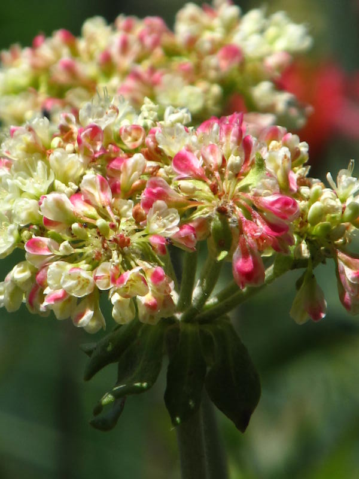

Flowers have long been a feature of articles in the Karabiner, especially hiking camp articles. The competitions to see who could identify the most species appear to have been ferocious. Well... maybe not ferocious but spirited.
(Hover your cursor over the image to pause the slideshow. Timing resets to zero when you move your cursor from over the image.)
"Name the Flowers" competition for fame and glory!
We have a winner!
...unless someone would care to discuss the identifications with Muriel. She says: "If anyone is a keen alpine wildflower viewer and wants to agree or disagree with my identifications I'd like to hear from them."
Even if the names are contested and changed, it is still loads of fame and glory crowned upon Muriel! It's the Kootenay comments that were the deciding factor for the judge.
Purple Fleabane. Also called Mountain Erigeron, Composite Family. Latin name Erigeron peregrinus. Very common Kootenay damp alpine and subalpine meadows. Silver Ridge Trail, Idaho Peak July 25, 2013
Probably Hound's Tongue or possibly Scouler's Hawkweed, Sunflower Family : Hieracium cynoglossoides. Grows in drylands. More common in the Okanagan sagebrush country. Conrad Kain Hut Trail, Bugaboo Park July 19, 2013
Red Columbine, Buttercup Family. Latin name : Aquilegia formosa. Common and widespread in the Kootenays in moist open forests, meadows and avalanche tracts. Columbina means dove-like while aquila means eagle. Eva Lake Trail, Revelstoke July 22, 2013
Common Red Paintbrush, Figwort Family : Castilleja miniata. Very common in mid to high elevations in the Kootenays. Meadows in the Sky, Revelstoke July 22, 2013
Western Anemone/Towhead Babies/Chalice Flower, Buttercup Family : Anemone occidentalis. Very common large, cream-white flowers, with a bluish tinge underneath, open early then turn to plumed seed heads covered with feathered tails that stay until carried away by fall winds across the wet alpine meadows. Mt. Frosthall Trail July 24, 2013
Mountain Phacelia/Silky Scorpionweed, Waterleaf Family : Phacelia sericea. A perennial that one finds on scree slopes, and rock crevices at high altitudes in our mountains. Silver Ridge Trail, Idaho Peak July 25, 2013
Fringed Grass-of-Parnassus, Grass-of-Parnassus Family : Parnassia finbriata. Commonly found in dense colonies along creeks, springs and lakesides from the valleys to the timberlines of the Kootenays. Mt. Willet Trail, Purcells August 4, 2013
Spotted Saxifrage/Prickly Saxifrage, Saxifrage Family : Saxifraga bronchialis. Common on rock crevices and scree slopes from mid to high elevations. Pride Peak, Monashee July 23, 2013
Probably (I need the rest of the plant to tell) Orange Agoseris, Sunflower Family : Agoseris autantiiaca. Widespread from mid to high elevation. Silver Ridge Trail, Idaho Peak July 25, 2013
Mountain Death, Camas Lily Family : Zigadenus elegans. Common in low to alpine in the Kootenays. Poisonous. Mt. Willet Trail, Purcells August 4, 2013
One of the Umbrella Plants/Wild Buckwheat, Buckwheat Family : Eriogonum unbellatum. I have seen these varieties also at KMC Summer Hike Camps - Oval leaved Umbrella Plant and Pin Cushion Buckwheat. Silver Ridge Trail, Idaho Peak July 25, 2013
Prairie Crocus/Pasque Flower, Buttercup Family : Anemone patens. Quite rare at KMC Camps. Manitoba's & S. Dakota's flower emblem. Wild Horse Ridge Trail, Top of the World July 16, 2013